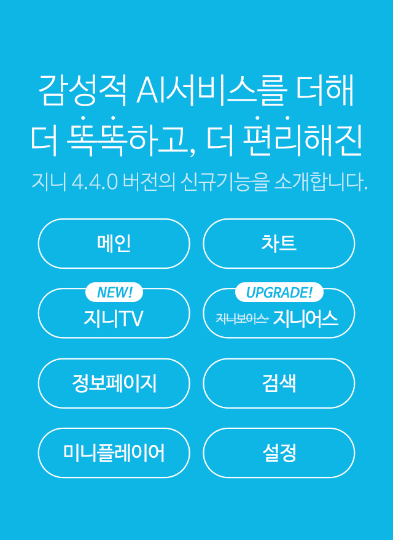
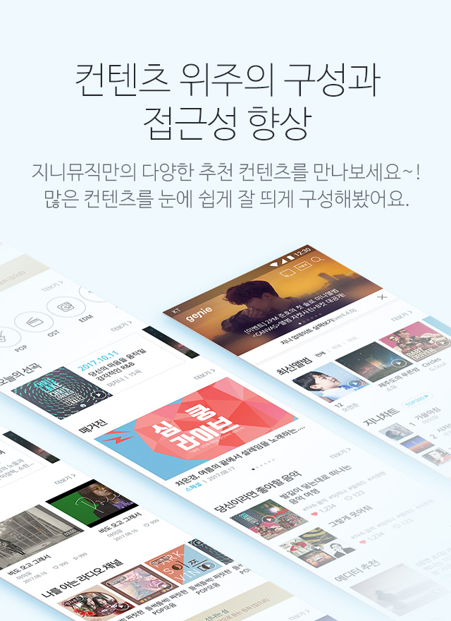
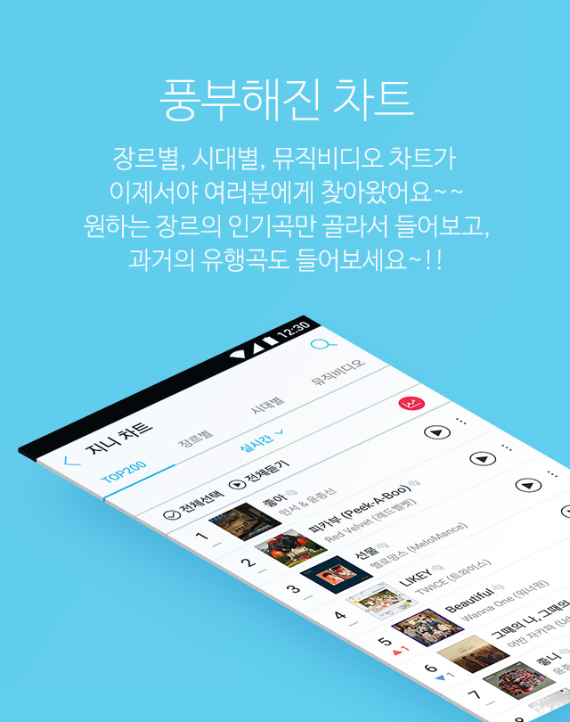
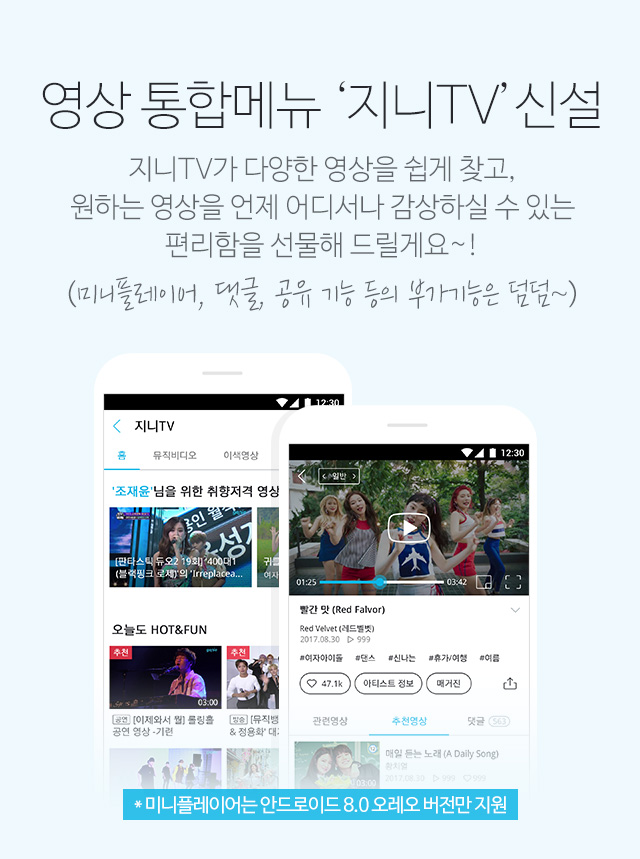
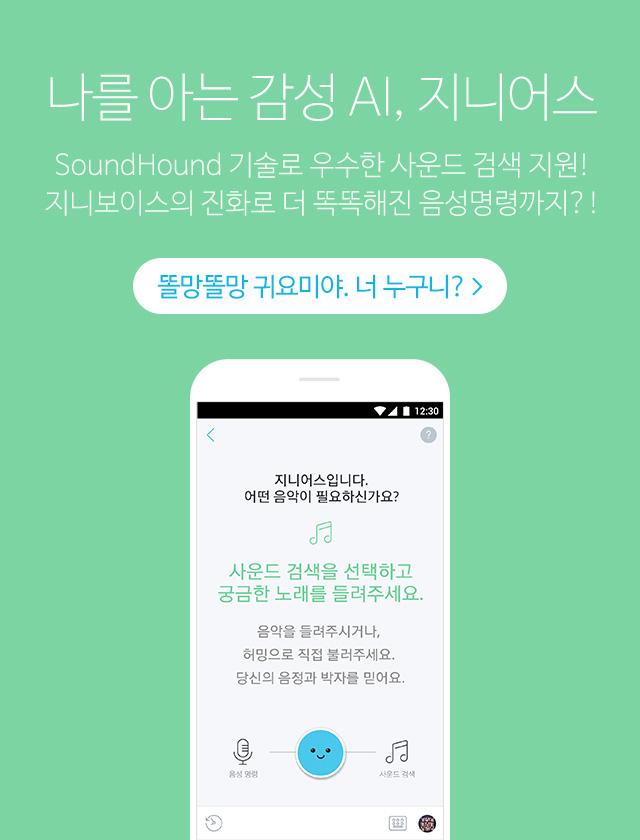
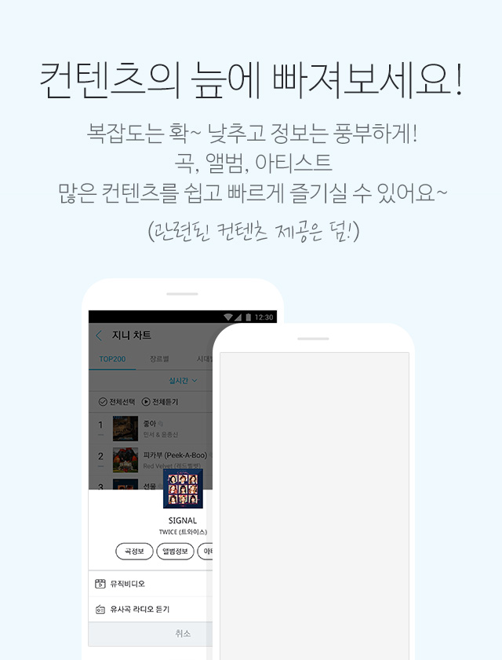
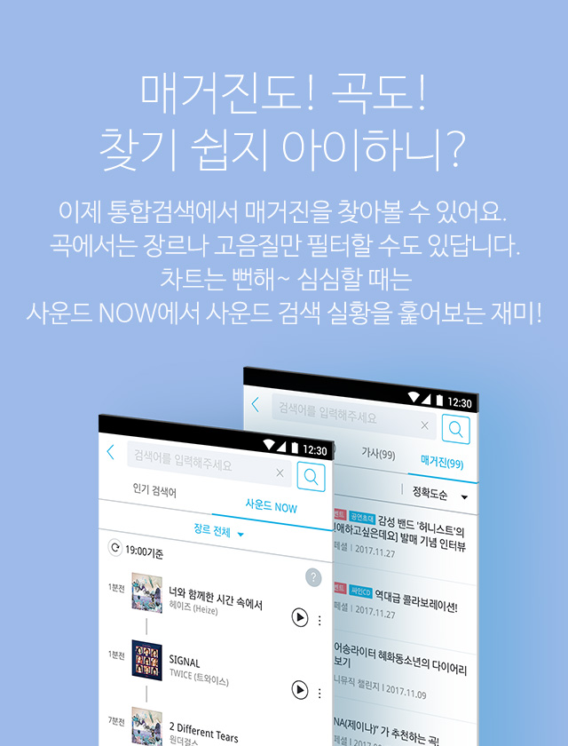
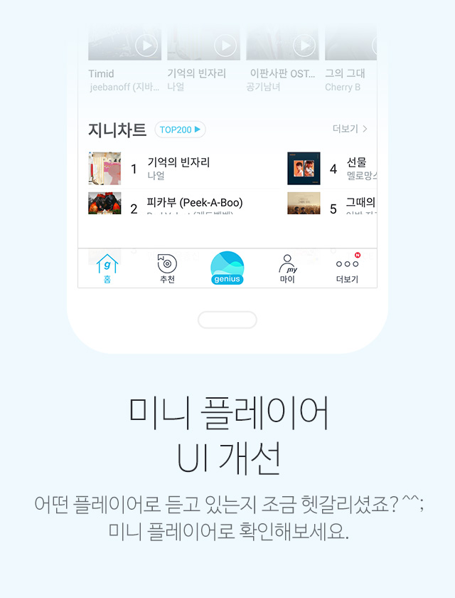
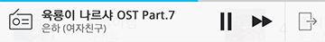
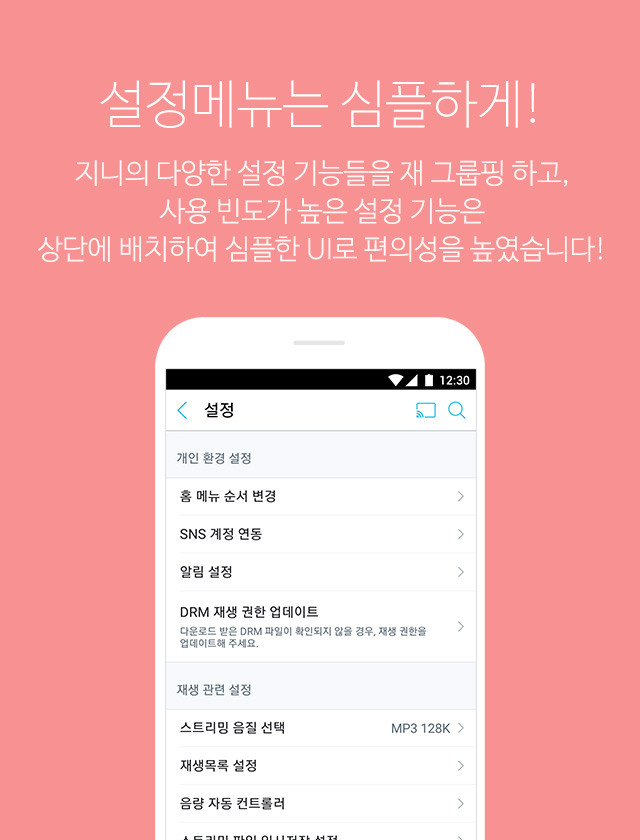

이렇게 좋은 신규버전 설치가 아직이신가요? 지금 바로 마켓에서 앱 업데이트를 해보세요!
업데이트 하기

감성적 AI서비스를 더해 더 똑똑하고, 더 편리해진
지니 4.4.0 버전의 신규기능을 소개합니다.
화면을 스크롤 하세요

컨텐츠 위주의 구성과 접근성 향상
지니뮤직만의 다양한 추천 컨텐츠를 만나보세요~! 많은 컨텐츠를 눈에 쉽게 잘 띄게 구성해봤어요.

풍부해진 차트
장르별, 시대별, 뮤직비디오 차트가 이제서야 여러분에게 찾아왔어요~~ 원하는 장르의 인기곡만 골라서 들어보고, 과거의 유행곡도 들어보세요~!!

영상 통합메뉴 ‘지니TV’신설
지니TV가 다양한 영상을 쉽게 찾고, 원하는 영상을 언제 어디서나 감상하실 수 있는 편리함을 선물해 드릴게요~!(미니플레이어, 댓글, 공유 기능 등의 부가기능은 덤덤~)

나를 아는 감성 AI, 지니어스
SoundHound 기술로 우수한 사운드 검색 지원! 지니보이스의 진화로 더 똑똑해진 음성명령까지?!
똘망똘망 귀요미야. 너 누구니?

나를 아는 감성 AI, 지니어스
SoundHound 기술로 우수한 사운드 검색 지원! 지니보이스의 진화로 더 똑똑해진 음성명령까지?!

매거진도! 곡도! 찾기 쉽지 아이하니?
이제 통합검색에서 매거진을 찾아볼 수 있어요. 곡에서는 장르나 고음질만 필터할 수도 있답니다. 차트는 뻔해~ 심심할 때는 사운드 NOW에서 사운드 검색 실황을 훑어보는 재미!

미니 플레이어 UI 개선
어떤 플레이어로 듣고 있는지 조금 헷갈리셨죠?^^; 미니 플레이어로 확인해보세요.


설정메뉴는 심플하게!
지니의 다양한 설정 기능들을 재 그룹핑 하고, 사용 빈도가 높은 설정 기능은 상단에 배치하여 심플한 UI로 편의성을 높였습니다!
혼자만 알고 쓰기 있기?없기?
똑똑하고 스마트해진 지니의 신규 기능을 공유 해봐요!